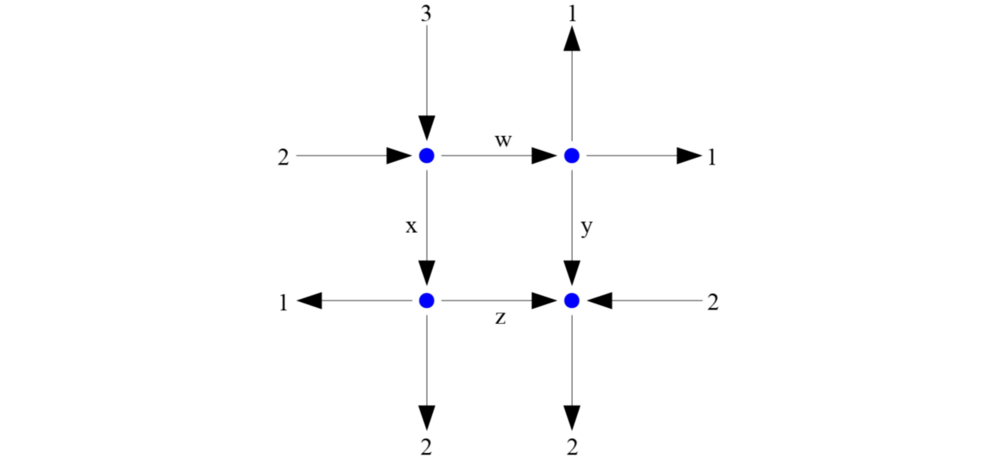

T3: Matrices#
Note
Click the and open this notebook in Colab to enable interactivity.
Note
To save your progress, make a copy of this notebook in Colab File > Save a copy in Drive and you’ll find it in My Drive > Colab Notebooks.
Now that we have experience with vectors (1D NumPy arrays), it’s time to move onto matrices, or 2D NumPy arrays! Matrices are the workhorse of linear algebra and are foundational to physics-based models, computer graphics, machine learning, and so much more!
Introduction#
A matrix can be defined in Python as row vectors stacked on top of each other.
As such, we can use the same np.array(obj) constructor where obj is now a list of lists, one for each row of the matrix.
import numpy as np
A = np.array([ [1, 2, 3], [4, 5, 6], [7, 8, 9], [10, 11, 12] ])
print(A)
print(A.shape)
[[ 1 2 3]
[ 4 5 6]
[ 7 8 9]
[10 11 12]]
(4, 3)
Note
We will also try to be consistent with our variable names: lowercase for scalars/vectors, uppercase for matrices.
All rows must have the same length or NumPy will raise an error.
np.array([ [1, 2, 3], [4, 5, 6, 7] ])
---------------------------------------------------------------------------
ValueError Traceback (most recent call last)
Cell In[2], line 1
----> 1 np.array([ [1, 2, 3], [4, 5, 6, 7] ])
ValueError: setting an array element with a sequence. The requested array has an inhomogeneous shape after 1 dimensions. The detected shape was (2,) + inhomogeneous part.
If a matrix is assigned to a variable, its entries can be referred to by a 2-number subscript in square brackets [_, _].
The first number in the subscript is the row index.
The second number in the subscript is the column index.
Remember that Python is indexed starting from 0!
A = np.array([ [1, 2, 3], [4, 5, 6] ])
print(A)
print(A[1, 1])
A[0, 2] = -2
print(A)
A[2, 0] = 7
[[1 2 3]
[4 5 6]]
5
[[ 1 2 -2]
[ 4 5 6]]
---------------------------------------------------------------------------
IndexError Traceback (most recent call last)
Cell In[3], line 6
4 A[0, 2] = -2
5 print(A)
----> 6 A[2, 0] = 7
IndexError: index 2 is out of bounds for axis 0 with size 2
Note
Note that unlike MATLAB, NumPy arrays cannot be dynamically resized. That is, you cannot reference indices outside of the range of the allocated matrix.
To compute the transpose of a matrix, use the A.T operator on matrix A.
To compute the conjugate transpose of a matrix, use the A.conj().T.
When you matrix doesn’t contain imaginary parts, the two types of transpose give the same result (fortunately, this is always the case in this class).
print(A.T)
print(A.conj().T)
[[ 1 4]
[ 2 5]
[-2 6]]
[[ 1 4]
[ 2 5]
[-2 6]]
A row vector can be thought of as a matrix with 1 row, though in NumPy there is some nuance.
A column vector is a matrix with 1 column (again, some nuance in NumPy).
A column vector can be made by transposing a row vector, generally speaking, although it doesn’t always work.
The following does work, but what happens if you remove the ndmin parameter?
x = np.array([1, 2, 3, 4, 5], ndmin=2)
print(x)
print(x.T)
[[1 2 3 4 5]]
[[1]
[2]
[3]
[4]
[5]]
To create a zero matrix of a specified dimension (shape), use the np.zeros(shape) command.
print(np.zeros([3, 5]))
print(np.zeros(4))
[[0. 0. 0. 0. 0.]
[0. 0. 0. 0. 0.]
[0. 0. 0. 0. 0.]]
[0. 0. 0. 0.]
Analogously, to create a matrix whose entries are all 1, use the np.ones(shape) command.
print(np.ones([3, 5]))
print(np.ones(4))
[[1. 1. 1. 1. 1.]
[1. 1. 1. 1. 1.]
[1. 1. 1. 1. 1.]]
[1. 1. 1. 1.]
To create an identity matrix, use the np.eye(M, N) command.
print(np.eye(3, 5))
print(np.eye(4))
[[1. 0. 0. 0. 0.]
[0. 1. 0. 0. 0.]
[0. 0. 1. 0. 0.]]
[[1. 0. 0. 0.]
[0. 1. 0. 0.]
[0. 0. 1. 0.]
[0. 0. 0. 1.]]
To obtain the dimensions of the matrix, use the .shape attribute.
The .size attributes returns the total number of elements.
Warning
These are the opposite keywords of MATLAB!
print(A.shape)
print(A.shape[0])
print(A.shape[1])
print(A.size)
(2, 3)
2
3
6
Element-wise operations work on matrices of the same dimension. If one of the two operands is a scalar, scalar expansion will take place. Unary scalar functions can be applied to matrices, and they will operate element-wise.
2 * np.eye(3) - np.ones(3)
array([[ 1., -1., -1.],
[-1., 1., -1.],
[-1., -1., 1.]])
A = np.array([ [np.pi/6, np.pi/4], [np.pi/3, np.pi/2] ])
np.sin(A)
array([[0.5 , 0.70710678],
[0.8660254 , 1. ]])
np.log(np.arange(1, 11)) > 2
array([False, False, False, False, False, False, False, True, True,
True])
Concatenation#
Matrices that have consistent dimensions can be concatenated, either vertically or horizontally, using the np.concatenate(arr_list, axis) function.
The first argument is a list of arrays, and the axis parameter specifies vertical (axis=0) or horizontal (axis=1) concatenation.
# vertical
A = np.array([ [1, 2], [3, 4] ])
B = np.array([[5, 6]])
print(A, B)
print(np.concatenate([A, B], axis=0))
# horizontal
print(np.concatenate([A, B.T], axis=1))
[[1 2]
[3 4]] [[5 6]]
[[1 2]
[3 4]
[5 6]]
[[1 2 5]
[3 4 6]]
Obviously, matrices with mismatched dimensions cannot be concatenated.
np.concatenate([np.ones((3,2)), np.ones((2,2))], axis=1)
---------------------------------------------------------------------------
ValueError Traceback (most recent call last)
Cell In[14], line 1
----> 1 np.concatenate([np.ones((3,2)), np.ones((2,2))], axis=1)
ValueError: all the input array dimensions except for the concatenation axis must match exactly, but along dimension 0, the array at index 0 has size 3 and the array at index 1 has size 2
Nested concatenations are possible, if you so desire.
A = np.eye(3)
B = np.ones((3,2))
C = np.zeros((4,5))
np.concatenate([np.concatenate([A, B], axis=1), C], axis=0)
array([[1., 0., 0., 1., 1.],
[0., 1., 0., 1., 1.],
[0., 0., 1., 1., 1.],
[0., 0., 0., 0., 0.],
[0., 0., 0., 0., 0.],
[0., 0., 0., 0., 0.],
[0., 0., 0., 0., 0.]])
Multiplication and division#
The @ operator in Python is matrix-matrix multiplication.
The product A @ B will be defined only if A.shape[1] and B.shape[0] are equal.
A = np.array([[1, 2], [3, 4]])
B = np.array([[1, 2, 3], [4, 5, 6]])
print(A @ B)
print(B @ A)
[[ 9 12 15]
[19 26 33]]
---------------------------------------------------------------------------
ValueError Traceback (most recent call last)
Cell In[16], line 4
2 B = np.array([[1, 2, 3], [4, 5, 6]])
3 print(A @ B)
----> 4 print(B @ A)
ValueError: matmul: Input operand 1 has a mismatch in its core dimension 0, with gufunc signature (n?,k),(k,m?)->(n?,m?) (size 2 is different from 3)
On the other hand, the * operator is element-wise multiplication, or scalar-matrix multiplication.
print(2 * A)
print(A * A)
[[2 4]
[6 8]]
[[ 1 4]
[ 9 16]]
Matrices can also be divided element-wise by a scalar, or another matrix of the same dimensions, with the / operator.
print(A / 2)
print(A / A)
[[0.5 1. ]
[1.5 2. ]]
[[1. 1.]
[1. 1.]]
Exponentiation can only be done on a square matrix using np.linalg.matrix_power(A, n), and the exponent n has to be an integer.
print(np.linalg.matrix_power(A, 3))
print(A @ A @ A)
[[ 37 54]
[ 81 118]]
[[ 37 54]
[ 81 118]]
System of linear equations#
Example#
A system of linear equations can be solved by putting the augmented matrix into its reduced row echelon form. We will demonstrate this by solving the network flow problem in the picture below for the four unknown flows.

Step 1#
Identify the system of equations to solve by matching inflow and outflow at each of the nodes:
Step 2#
Construct the augmented matrix and reduce. After the sequence of operations, you should get
Step 3#
Read off the solution(s), if any.
Here, there are infinitely many solutions, as there’s one degree of freedom. If we pick \(z\) as the free parameter, other variables are defined by \(w = 2-z\), \(x = 3+z\), and \(y=-z\).
Python verification#
We can produce the reduced row echelon form of a matrix using the rref() method from the SymPy library.
Unfortunately there’s no built-in method in NumPy, but the SymPy library has its own advantages (look at that \(\LaTeX\)-ified output!).
Note
Depending on your Python environment, you may have to install SymPy before you can import it, i.e., pip install sympy.
Luckily, Colab comes with it pre-installed!
# Python verification
import numpy as np
from sympy import Matrix
A = np.array([[1, 1, 0, 0], [1, 0, -1, 0], [0, 1, 0, -1], [0, 0, 1, 1]])
b = np.array([[5], [2], [3], [0]])
aug = Matrix(np.concatenate([A, b], axis=1))
display(aug.rref()[0])
print(A @ np.array([[2], [3], [0], [0]]) - b)
print(A @ np.array([[1], [4], [-1], [1]]) - b)
[[0]
[0]
[0]
[0]]
[[0]
[0]
[0]
[0]]
Your turn#
Repeat the previous problem, but with number \(3\) (left flow on the top) replaced by \(4\).
TODO: Write your solution below#
What is augmented matrix and reduced augmented matrix?
Range indexing (optional)#
You can take certain elements of a vector and put them together into a new vector by supplying a vector of indices as the subscript.
u = np.arange(100, 54, -5)
print(u[[1, 4, 2, -1, 5]])
print(u[np.arange(3, 10, 2)])
print(u[np.arange(4, -1, -1)])
[95 80 90 55 75]
[85 75 65 55]
[ 80 85 90 95 100]
This works with matrices too, as we’ll show below with a fancy Kronecker product and a Vandermonde matrix.
A = np.kron(np.array([[1], [2]]), np.vander(np.arange(1, 6)))
A[[1, 3, -1], 1:4]
array([[ 8, 4, 2],
[ 64, 16, 4],
[250, 50, 10]])
To refer to a whole column or a whole row, use : as the corresponding index.
print(A[-1, :])
print(A[:, [3, 1]])
[1250 250 50 10 2]
[[ 1 1]
[ 2 8]
[ 3 27]
[ 4 64]
[ 5 125]
[ 2 2]
[ 4 16]
[ 6 54]
[ 8 128]
[ 10 250]]
Assignment to a block in a matrix can be done if the right-hand side is a matrix of the same dimension.
A[1:5, 2:4] = np.eye(4, 2)
print(A)
A[1:5, 2:4] = np.ones((3, 3))
[[ 1 1 1 1 1]
[ 16 8 1 0 1]
[ 81 27 0 1 1]
[ 256 64 0 0 1]
[ 625 125 0 0 1]
[ 2 2 2 2 2]
[ 32 16 8 4 2]
[ 162 54 18 6 2]
[ 512 128 32 8 2]
[1250 250 50 10 2]]
---------------------------------------------------------------------------
ValueError Traceback (most recent call last)
Cell In[24], line 3
1 A[1:5, 2:4] = np.eye(4, 2)
2 print(A)
----> 3 A[1:5, 2:4] = np.ones((3, 3))
ValueError: could not broadcast input array from shape (3,3) into shape (4,2)
The right-hand side of a block assignment can also be a scalar, in which case all entries in the block will be set to the same scalar. This is another instance of scalar expansion.
A = np.kron(np.array([[1], [2]]), np.vander(np.arange(1, 6)))
A[[2, 4, 6], [0, 2, 4]] = 9
print(A)
A[:, :] = 0
print(A)
A = 0
print(A) # note the difference!
[[ 1 1 1 1 1]
[ 16 8 4 2 1]
[ 9 27 9 3 1]
[ 256 64 16 4 1]
[ 625 125 9 5 1]
[ 2 2 2 2 2]
[ 32 16 8 4 9]
[ 162 54 18 6 2]
[ 512 128 32 8 2]
[1250 250 50 10 2]]
[[0 0 0 0 0]
[0 0 0 0 0]
[0 0 0 0 0]
[0 0 0 0 0]
[0 0 0 0 0]
[0 0 0 0 0]
[0 0 0 0 0]
[0 0 0 0 0]
[0 0 0 0 0]
[0 0 0 0 0]]
0
Elementary row operations (optional)#
SymPy can put a matrix into the reduced row echelon form for you, but you may not see each step of the reduction. If you want to perform row operations manually, you can do so using range indexing as follows.
import numpy as np
A = np.array([[1, 2, 3], [2, 5, 8], [3, 4, 5]])
print(A)
# subtract 2 * Row1 from Row2
A[1, :] = A[1, :] - 2 * A[0, :]
# subtract 3 * Row1 from Row3
A[2, :] = A[2, :] - 3 * A[0, :]
# TODO: Try more on your own and compare with the sympy solution
[[1 2 3]
[2 5 8]
[3 4 5]]